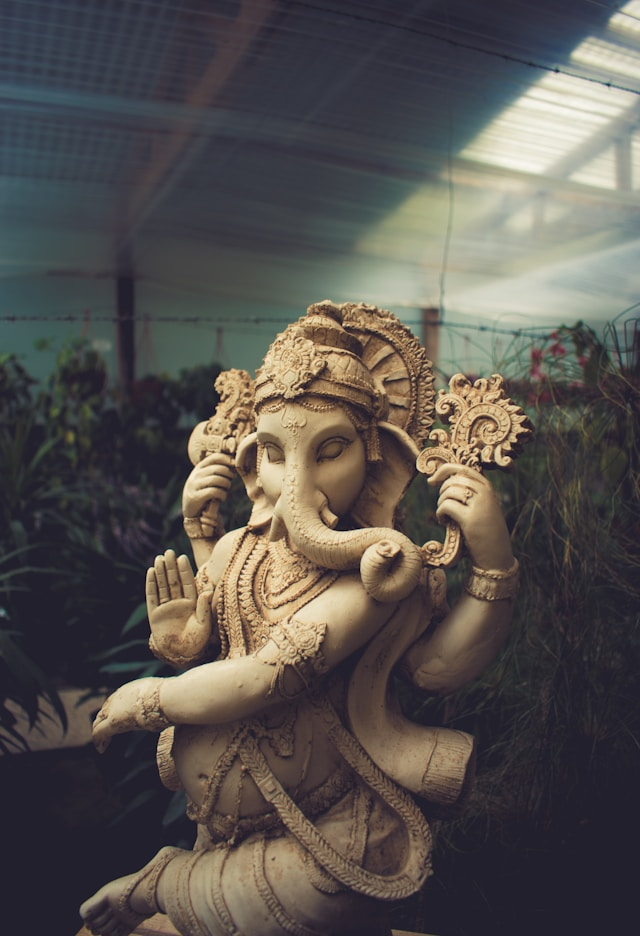

Hinduismen er en av verdens eldste religioner, med en rik og mangfoldig trostradisjon. Her er noen nøkkelpunkter.
Hinduismen er svært mangfoldig med en rekke guder og guddommer, inkludert Brahma, Vishnu, Shiva og Devi. Troen varierer regionalt og har mange ulike skoler og filosofier.
Troen på karma — handlingenes konsekvenser — er sentralt i hinduismen. Våre handlinger påvirker vår skjebne i dette livet og i fremtidige liv.
Hinduismen tror på samsara, en syklus av gjenfødelse der sjelen går gjennom ulike legemer basert på ens karma. Målet er å oppnå moksha — frigjøring fra samsara og forening med det guddommelige.
Hinduismen har en rik litterær tradisjon med gamle tekster, inkludert de vediske skriftene, Upanishadene, Bhagavad Gita og episke dikt som Ramayana og Mahabharata.
Praksiser som yoga og meditasjon stammer fra hinduistisk filosofi og har blitt populære over hele verden for sine helsemessige og åndelige fordeler.
Hinduistisk praksis varierer fra region til region og kan inkludere ritualer, tilbedelse av guder og guddommer, pilegrimsferder og faste. Dette er bare et overfladisk innblikk i en dypt kompleks og mangfoldig religion.

Ganesha er en av de mest kjente og tilbedte guddommene i hinduistisk religion. Han er kjent som «fjerneren av hindringer» og påkalles ofte før begynnelsen av viktige anledninger og rituelle seremonier. Ganesha er også assosiert med visdom, intelligens og suksess.
Fysisk sett har han et elefanthode og en menneskekropp. Hans attributter inkluderer en ødelagt støttann, som symboliserer hans evne til å fjerne hindringer. Ganesha er en svært populær figur ikke bare i India, men også i mange andre deler av verden med en betydelig hinduistisk befolkning.
Bergen Hindu Sabha er en organisasjon basert i Bergen, dedikert til å fremme og bevare hinduistisk kultur, religion og verdier blant den hinduistiske befolkningen i området. Organisasjonen fungerer som et samlingspunkt for hinduer i Bergen og tilbyr et fellesskap der medlemmer kan delta i religiøse seremonier, kulturelle arrangementer og sosiale aktiviteter.
Bergen Hindu Sabha arrangerer festivaler som Diwali, Thiruvizha og andre hinduistiske høytider, og tilbyr undervisning om hinduismens lære og praksis — både for medlemmer og interesserte utenfor samfunnet. Vedtektene ble godkjent ved siste generalforsamling den 07.04.2024.
Skolebesøk hos oss gir elever en unik mulighet til å utforske og lære om hinduismen og den hinduistiske kulturen. Vårt trossamfunn, som tilhører shivaisme-retningen av hinduisme, har en rik historie og et aktivt fellesskap av troende. Ta kontakt med oss per e-post for å avtale en tid for omvisning på templet.
styret@bergenhindusabha.no